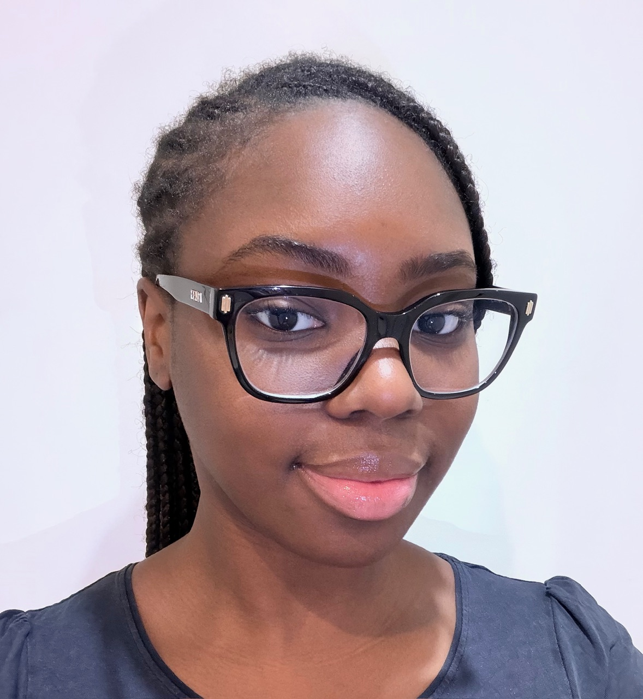

Khalissa Bouraima
Étudiante en BUT Informatique à l'Université Paris-Saclay. Je recherche une alternance de 24 mois idéalement en Développement.

Étudiante en BUT Informatique à l'Université Paris-Saclay. Je recherche une alternance de 24 mois idéalement en Développement.